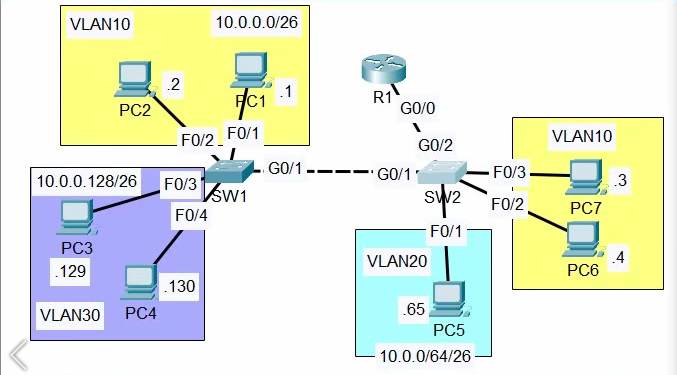

VLAN Configuration in Cisco Packet Tracer: Complete Practical Lab
Before configuring VLANs in Cisco Packet Tracer, you need to understand what a VLAN is, why networks use VLANs, and how VLANs separate traffic across switches. This tutorial continues from those essential networking concepts and applies them to a practical topology containing Cisco switches, a router, multiple departments, access ports, trunk links, native VLAN configuration, and inter-VLAN routing.

This hands-on guide is designed for beginners, networking students, Cisco certification candidates, and developers or IT professionals preparing for technical interviews. Instead of using an assumed network design, the tutorial follows the uploaded topology exactly, including the device names, switch interfaces, VLAN IDs, department assignments, trunk connections, and visible IP addresses. Any value not shown in the topology is clearly identified as an assumption rather than being presented as an original diagram value.
Introduction
1. What Is a VLAN?
A VLAN, or Virtual Local Area Network, is a logical network created inside a physical switch infrastructure. It allows devices connected to the same physical switch or to different switches connected through trunks-to be grouped into separate logical networks.
Without VLANs, all devices connected to a switch normally share the same default Layer 2 broadcast domain. With VLANs, devices can be separated according to department, function, security requirement, or application, even when they use the same physical switching hardware.
For this lab, the network is divided into three department-based VLANs:
| Department | VLAN | Network |
|---|---|---|
| Engineering | VLAN 10 | 10.0.0.0/26 |
| HR | VLAN 20 | 10.0.0.64/26 |
| Sales | VLAN 30 | 10.0.0.128/26 |
The topology also uses VLAN 999 as a dedicated native VLAN for trunk links. VLAN 999 is an assumption selected for this lab because the uploaded diagram does not specify a native VLAN. It is intentionally kept separate from user access VLANs.
Why Are VLANs Needed?
VLANs are needed to divide one physical network into multiple logical broadcast domains. In this topology, Engineering, HR, and Sales share physical switching infrastructure, but their traffic remains logically separated.
1. VLANs separate departments
The Engineering, HR, and Sales devices belong to different logical networks:
Engineering → VLAN 10 → 10.0.0.0/26
HR → VLAN 20 → 10.0.0.64/26
Sales → VLAN 30 → 10.0.0.128/26
A Layer 2 switch can forward traffic within the same VLAN, but it does not automatically forward traffic between different VLANs.
2. VLANs reduce broadcast domains
Broadcast traffic sent by one VLAN remains inside that VLAN unless it is deliberately routed elsewhere. This prevents every device in the physical network from receiving every broadcast frame.
For example:
- Engineering broadcasts remain within VLAN 10.
- HR broadcasts remain within VLAN 20.
- Sales broadcasts remain within VLAN 30.
This improves network organization and reduces unnecessary broadcast traffic.
3. VLANs improve network organization
A small site can use two physical switches for several departments instead of purchasing separate switches for every department. In this lab:
- SW1 connects Engineering and Sales devices.
- SW2 connects Engineering and HR devices.
- VLAN 10 spans both switches.
- VLAN 20 exists on SW2.
- VLAN 30 exists on SW1.
This provides logical separation without requiring one physical network for every department.
4. VLANs support basic traffic isolation
VLANs prevent ordinary Layer 2 communication between departments. An Engineering device cannot directly switch a frame to an HR or Sales device because those devices belong to different VLANs.
However, VLANs alone are not a complete security solution. Communication between VLANs becomes possible when a router or Layer 3 switch is configured to route between them. In this lab, router R1 performs that inter-VLAN routing.
5. VLANs provide flexibility when devices move
A device's logical network membership can be changed by modifying the switch port configuration. The physical location of the PC does not determine its department; the VLAN assigned to its access port does.
For example:
Cisco IOS CLI
switchport mode access
switchport access vlan 10
These commands place the connected endpoint into VLAN 10, regardless of which supported access port is used.
Essential VLAN Concepts
Access port
An access port connects a switch to an end device such as a PC. It belongs to one VLAN and normally carries untagged traffic.
In this lab:
SW1 F0/1 → Engineering PC → VLAN 10
SW1 F0/3 → Sales PC → VLAN 30
SW2 F1/0 → HR PC → VLAN 20
A PC's network interface normally does not understand 802.1Q VLAN tags. Therefore, the switch sends frames to the PC without VLAN tags.
Typical configuration:
Cisco IOS CLI
interface GigabitEthernet0/1
switchport mode access
switchport access vlan 10
Trunk port
A trunk port carries traffic for multiple VLANs over one physical link. Trunks are required when one cable must transport traffic belonging to several VLANs.
This lab uses trunks for:
SW1 G0/0 ↔ SW2 G0/1
SW2 G0/2 ↔ R1 G0/0
Trunk traffic is identified using 802.1Q VLAN tags, allowing the receiving device to determine which VLAN each frame belongs to.
Typical configuration:
Cisco IOS CLI
interface GigabitEthernet0/0
switchport mode trunk
switchport trunk allowed vlan 10,30
Native VLAN
The native VLAN is the VLAN assigned to untagged traffic on an 802.1Q trunk. Both ends of a trunk must use the same native VLAN.
In this lab, VLAN 999 is used as the native VLAN:
Cisco IOS CLI
switchport trunk native vlan 999
VLAN 999 is not assigned to real user access ports. This prevents ordinary endpoint traffic from being carried accidentally as untagged native VLAN traffic.
Inter-VLAN routing
A Layer 2 switch can forward frames inside the same VLAN, but it cannot route packets between separate IP networks. Inter-VLAN routing provides communication between VLANs.
This lab uses router-on-a-stick:
R1 G0/0.10 → VLAN 10 gateway
R1 G0/0.20 → VLAN 20 gateway
R1 G0/0.30 → VLAN 30 gateway
Each router subinterface becomes the default gateway for one VLAN:
| VLAN | Router Subinterface | Gateway |
|---|---|---|
| 10 | G0/0.10 | 192.168.1.62 |
| 20 | G0/0.20 | 192.168.1.126 |
| 30 | G0/0.30 | 192.168.1.190 |
The gateway addresses are labeled assumptions selected to match the subnetting plan in the uploaded tutorial.
How VLAN Traffic Moves
Same-VLAN communication
When two Engineering PCs communicate:
Engineering PC
↓
SW1 access port
↓
VLAN 10
↓
Destination access port
↓
Engineering PC
The switch forwards the traffic at Layer 2. R1 is not involved.
If the Engineering PCs are connected to different switches, VLAN 10 crosses the SW1–SW2 trunk:
Engineering PC
↓
SW1 access port
↓
VLAN 10
↓
SW1–SW2 trunk
↓
VLAN 10
↓
SW2 access port
↓
Engineering PC
Inter-VLAN communication
When an HR PC communicates with an Engineering PC:
HR PC
↓
SW2 access port
↓
VLAN 20
↓
SW2–R1 trunk
↓
R1 VLAN 20 subinterface
↓
Routing decision
↓
R1 VLAN 10 subinterface
↓
SW2–SW1 trunk
↓
VLAN 10
↓
Engineering PC
The router removes the original Layer 2 frame, examines the destination IP address, selects the correct destination network, and forwards the traffic through the appropriate VLAN subinterface.
What This Tutorial Covers
- Rebuild the uploaded physical topology in Cisco Packet Tracer.
- Configure the seven PCs with the documented IP addressing plan.
- Create VLANs 10, 20, 30, and the dedicated native VLAN 999.
- Assign switch access ports to the correct departments.
- Configure the SW1–SW2 trunk.
- Configure the SW2–R1 trunk.
- Restrict each trunk to the VLANs it actually needs.
- Configure VLAN 999 as the native VLAN on both trunk ends.
- Configure router-on-a-stick subinterfaces on R1.
- Test same-VLAN communication.
- Test VLAN 10 across the switch boundary.
- Test inter-VLAN routing between Engineering, HR, and Sales.
- Verify VLAN membership, trunk state, native VLAN settings, router interfaces, and routing tables.
- Troubleshoot incorrect access VLANs, missing trunk VLANs, native VLAN mismatches, incorrect router tags, and wrong default gateways.
- Apply basic security hardening such as unused-port shutdown, port security, BPDU Guard, VLAN pruning, and native VLAN protection.
Before Starting the Configuration
Use the following logical sequence while working through the lab:
Physical topology
↓
IP addressing
↓
VLAN creation
↓
Access-port assignment
↓
Trunk configuration
↓
Native VLAN configuration
↓
Inter-VLAN routing
↓
Verification and troubleshooting
The central rule is:
Endpoint
↓
Access port
↓
VLAN
↓
Trunk, if the destination is on another switch or must reach R1
↓
Router
↓
Destination VLAN
↓
Destination endpoint
Once these concepts are clear, VLAN configuration becomes easier to understand: access ports place endpoints into VLANs, trunk ports transport multiple VLANs, the native VLAN handles untagged trunk traffic, and R1 performs the Layer 3 routing required for communication between separate VLANs.
VLAN Configuration in Cisco Packet Tracer
This is a hands-on VLAN configuration in Cisco Packet Tracer project: read the topology, rebuild it, address the endpoints, create the VLANs, wire up access ports, bring up trunk links with an explicit native VLAN, configure inter-VLAN routing, verify every layer, break it on purpose, fix it, and harden it. No what is a VLAN filler, you'll pick up the concepts exactly where you need them to finish the next command.

Topology
Devices and links visible in the diagram:
- Router R1 - one downlink interface, labeled
G0/0. - Switch SW1 - connects four PCs and one trunk uplink.
- Switch SW2 - connects three PCs, one trunk to SW1, and one trunk to R1.
- PC1 (.1) and PC2 (.2) on SW1, VLAN 10, network
10.0.0.0/26- portsF0/1andF0/2. - PC3 (.129) and PC4 (.130) on SW1, VLAN 30, network 10.0.0.128/26 - ports
F0/3andF0/4. - PC7 (.3) and PC6 (.4) on SW2, VLAN 10, same network 10.0.0.0/26 as the SW1 side - ports
F0/3andF0/2. - PC5 (.65) on SW2, VLAN 20, network 10.0.0.64/26 - port
F0/1. - SW1
G0/0↔ SW2G0/0- switch-to-switch trunk. - SW2
G0/1↔ R1G0/0- switch-to-router trunk. - R1 has no direct link to SW1 - SW1 traffic bound for R1 must first cross the SW1–SW2 trunk.
| Item | Details |
|---|---|
| Routers | R1 - single downlink G0/0; model not printed in the image |
| Switches | SW1, SW2 - models not printed; ports shown as G0/1–G0/3 plus a separate G1/0 |
| End devices | 7 PCs: 2 Engineering (SW1), 2 Sales (SW1), 2 Engineering (SW2), 1 HR (SW2) |
| VLANs | VLAN 10 "Engineering" (spans SW1 and SW2), VLAN 20 "HR" (SW2 only), VLAN 30 "Sales" (SW1 only) |
| Trunk links | SW1 G0/0 ↔ SW2 G0/0; SW2 G0/1 ↔ R1 G0/0 |
| Access links | SW1 F0/1, F0/2, F0/3, F0/4; SW2 F0/1, F0/2, F0/3 |
| Routed links | R1 G0/0 - router-on-a-stick, subinterfaces implied by the single-link design |
| IP addresses | PC1 .1, PC2 .2, PC3 .129, PC4 .130, PC5 .65, PC6 .4, PC7 .3 - all seven host addresses. |
| Unknown details | Device models not shown, treated as an assumption below. A magnifying-glass icon with a red arrow sits on the SW2–R1 link, read as a visual highlight from the diagram author, not a device or a fault marker. No native VLAN is marked in the image, so the native VLAN used in this lab (VLAN 999) is a labeled assumption, not a value taken from the diagram. |
Text reconstruction of the wiring, port for port:
PC1 (.1) ── F0/1 ── SW1
PC2 (.2) ── F0/2 ── SW1
PC3 (.129) ── F0/3 ── SW1
PC4 (.130) ── F0/4 ── SW1
SW1 G0/1 ═══ trunk ═══ G0/1 SW2
PC7 (.3) ── F0/3 ── SW2
PC6 (.4) ── F0/2 ── SW2
PC5 (.65) ── F0/1 ── SW2
SW2 G0/2 ═══ trunk ═══ G0/0 R1
Network Topology Overview
- Access Layer (SW1):
- PC1 (NIC) ⟶ SW1 (F0/1) | Copper straight-through | Access
- PC2 (NIC) ⟶ SW1 (F0/2) | Copper straight-through | Access
- PC3 (NIC) ⟶ SW1 (F0/3) | Copper straight-through | Access
- PC4 (NIC) ⟶ SW1 (F0/4) | Copper straight-through | Access
- Access Layer (SW2):
- SW2 (F0/1) ⟶ PC5 (NIC) | Copper straight-through | Access
- SW2 (F0/2) ⟶ PC6 (NIC) | Copper straight-through | Access
- SW2 (F0/3) ⟶ PC7 (NIC) | Copper straight-through | Access
- Trunk & Core Connections:
- SW1 (G0/1) ⟶ SW2 (G0/1) | Copper crossover (See note below) | Trunk (Native VLAN 999)
- SW2 (G0/2) ⟶ R1 (G0/0) | Copper straight-through | Trunk (Router-on-a-Stick, Native VLAN 999)
Role of each device:
- SW1 and SW2 switch frames within a VLAN using learned MAC addresses.
- SW1 and SW2 keep VLAN 10, 20, and 30 separated at Layer 2.
- R1 is the only Layer-3 device - the sole point where traffic can move between VLANs.
- Every access port faces a PC.
- Both switch-to-switch and switch-to-router links are trunks.
- The default gateway for every host lives on R1, once its subinterfaces exist.
Explaining the topology conceptually
Physical view
- SW1: four PCs (PC1, PC2, PC3, PC4) plus one uplink to SW2.
- SW2: three PCs (PC7, PC6, PC5) plus one uplink to SW1 and one uplink to R1.
- R1: touches only SW2 physically, but is the only routing point logically.
Logical view
- VLAN 10 (
10.0.0.0/26) - members on both SW1 (PC1, PC2) and SW2 (PC7, PC6), connected by the SW1–SW2 trunk. - VLAN 20 (
10.0.0.64/26) - members only on SW2 (PC5). - VLAN 30 (
10.0.0.128/26) - members only on SW1 (PC3, PC4). - VLAN 10 traffic stays inside VLAN 10 regardless of which switch the hosts sit on - the trunk handles it, R1 is never involve
- VLAN 10-to-VLAN 20, VLAN 10-to-VLAN 30, and VLAN 20-to-VLAN 30 traffic all has to leave its own VLAN and get routed by R1.
Why this design is used
- Three departments share two physical switches instead of one switch per department, cheaper, and realistic for a small site.
- VLANs give each department its own broadcast domain without dedicated hardware.
- Access ports are used for every PC because a PC's NIC doesn't understand 802.1Q tags, it needs untagged traffic.
- Trunk ports are used between SW1–SW2 and SW2–R1 because both links carry more than one VLAN.
- Inter-VLAN routing is required the moment two departments need to talk, since a Layer-2 switch alone never forwards between subnets.
- R1 becomes the default gateway for every VLAN because it's the only device positioned to make that Layer-3 decision.
Lab requirements
- Cisco Packet Tracer - any release with subinterface support.
- Two switches - 2960-24TT, 2960+, or 3560 all provide enough FastEthernet and GigabitEthernet ports to match F0/1–F0/4 plus G0/1/G0/2. Pick a model, then verify its port names against this article.
- One router with subinterface support on its first Ethernet port: a 1941 or 2911 both work; subinterface support is an IOS feature, not tied to one router model.
- Seven PCs.
- Copper straight-through cabling for every link shown - no serial cables, since none appear in the image.
Stage 1: Physical topology
- Place R1, SW1, SW2, and all seven PCs on the canvas.
- Rename each device to match the image:
R1,SW1,SW2. - Connect SW1 to PC1 (F0/1), PC2 (F0/2), PC3 (F0/3), and PC4 (F0/4).
- Connect SW2 to PC7 (F0/3), PC6 (F0/2), and PC5 (F0/1).
- Connect SW1
G0/1to SW2G0/1. - Connect SW2
G0/2to R1G0/0. - Wait for link lights to settle, amber to green in the first several seconds is normal spanning-tree behavior, not a fault.
Checkpoint:
Before entering any CLI command, confirm that the Packet Tracer workspace matches Figure 1.
| Device | Interface | Connects to | Link type | Purpose |
|---|---|---|---|---|
| SW1 | F0/1 |
PC1 (.1) | Access | VLAN 10 endpoint |
| SW1 | F0/2 |
PC2 (.2) | Access | VLAN 10 endpoint |
| SW1 | F0/3 |
PC3 (.3) | Access | VLAN 30 endpoint |
| SW1 | F0/0 |
Sales PC (.4) | Access | VLAN 30 endpoint |
| SW1 | G0/1 |
SW2 G0/1 | Trunk | Carries VLAN 10 + VLAN 30 to SW2, native VLAN 999 |
| SW2 | F0/3 |
PC7 (.3) | Access | VLAN 10 endpoint |
| SW2 | F0/4 |
PC6 (.4) | Access | VLAN 10 endpoint |
| SW2 | F0/1 |
PC5 (.65) | Access | VLAN 20 endpoint |
| SW2 | F0/1 |
SW1 G0/1 | Trunk | Carries VLAN 10 + VLAN 30 from SW1, native VLAN 999 |
| SW2 | G0/2 |
R1 G0/0 | Trunk | Carries VLAN 10 + VLAN 20 + VLAN 30, native VLAN 999 |
| R1 | G0/0 |
SW2 G0/2 | Trunk (routed, router-on-a-stick) | Single uplink for all three VLANs |
IP addressing plan
- The image labels all seven host addresses directly: PC1
192.168.1.1, PC2192.168.1.2, PC3192.168.1.129, PC4192.168.1.130, PC5192.168.1.65, PC6192.168.1.4, PC7192.168.1.3. - Subnet masks are not labeled, but the image shows the three networks as /26 subnets.
| Department | VLAN | Network |
|---|---|---|
| Engineering | 10 | 10.0.0.0/26 |
| HR | 20 | 10.0.0.64/26 |
| Sales | 30 | 10.0.0.128/26 |
| Device | Interface | VLAN | IP Address | Subnet Mask | Default Gateway |
|---|---|---|---|---|---|
| PC1 | NIC → SW1 F0/1 | 10 | 10.0.0.1 | 255.255.255.192 | 10.0.0.62 |
| PC2 | NIC → SW1 F0/2 | 10 | 10.0.0.2 | 255.255.255.192 | 10.0.0.62 |
| PC3 | NIC → SW1 F0/3 | 30 | 10.0.0.129 | 255.255.255.192 | 10.0.0.190 |
| PC4 | NIC → SW1 F0/4 | 30 | 10.0.0.130 | 255.255.255.192 | 10.0.0.190 |
| PC7 | NIC → SW2 F0/3 | 10 | 10.0.0.3 | 255.255.255.192 | 10.0.0.62 |
| PC6 | NIC → SW2 F0/2 | 10 | 10.0.0.4 | 255.255.255.192 | 10.0.0.62 |
| PC5 | NIC → SW2 F0/1 | 20 | 10.0.0.65 | 255.255.255.192 | 10.0.0.126 |
| R1 | G0/0.10 | 10 | 10.0.0.62 | 255.255.255.192 | - |
| R1 | G0/0.20 | 20 | 10.0.0.126 | 255.255.255.192 | - |
| R1 | G0/0.30 | 30 | 10.0.0.190 | 255.255.255.192 | - |
Why the addressing is laid out this way:
- Each VLAN gets its own
/26because a VLAN is its own broadcast domain and needs its own subnet. - Hosts in the same VLAN share the same subnet because they're expected to talk directly at Layer 2, without a gateway.
- The default gateway matters only when a host needs to reach an address outside its own subnet.
- Every PC can have its gateway configured now, but nothing answers at those addresses until Stage 4, that's expected, not a fault.
- Don't assign
10.0.0.0(network) or10.0.0.63/10.0.0.127/10.0.0.191(broadcast) of each/26to any host or gateway. - The last usable address in each block is used as the gateway specifically to avoid colliding with the .1 host address already shown in the image.
Configuring each PC in Packet Tracer:
- Click the PC.
- Select Desktop.
- Select IP Configuration.
- Choose Static.
- Enter the IP address from the table above.
- Enter
255.255.255.192as the subnet mask. - Enter the correct default gateway.
- Close the configuration window.
Before creating any VLAN, run these two tests and note the result:
Same-VLAN endpoint → same-VLAN endpoint
Different-VLAN endpoint → different-VLAN endpoint
- At this stage, expect both tests to behave unpredictably or fail.
- The switches haven't been told anything about VLAN 10, 20, or 30 yet.
- Every port is still sitting at the default access VLAN (VLAN 1), not the VLAN this topology actually needs.
Configure the switches
Hostnames first, matching the image exactly:
Cisco IOS CLI
enable
configure terminal
hostname SW1
Repeat with hostname SW2 on the second switch.
Create VLANs
- VLAN 10 and VLAN 30 belong on SW1.
- VLAN 10 and VLAN 20 belong on SW2.
- VLAN 10 must be created on both switches, a VLAN ID in one switch's database has no effect on any other switch until it's created there too.
- VLAN 999 (the native VLAN used for both trunks in this lab) must also be created on SW1 and SW2 before it can be assigned as a trunk's native VLAN.
On SW1:
Cisco IOS CLI
vlan 10
name Engineering
vlan 30
name Sales
vlan 999
name NATIVE-UNUSED
On SW2:
Cisco IOS CLI
vlan 10
name Engineering
vlan 20
name HR
vlan 999
name NATIVE-UNUSED
What each line does:
- vlan 10 creates VLAN 10 in the switch's VLAN database.
- name Engineering assigns a descriptive name to the VLAN. IOS does not require a VLAN name, but using meaningful names makes the configuration easier to understand and troubleshoot.
- vlan 999 and name NATIVE-UNUSED create VLAN 999 without assigning any access ports to it. This VLAN is reserved for use as the trunk's native VLA
- Creating a VLAN does not assign it to any port. It only adds the VLAN to the switch's VLAN database.
- A VLAN will not carry endpoint traffic until an access port is assigned to that VLAN.
Verify:
Cisco IOS CLI
SW1# show vlan brief
VLAN Name Status Ports
---- -------------------------------- --------- -------------------------------
1 default active
10 Engineering active
30 Sales active
999 NATIVE-UNUSED active
| Command | Purpose | Expected result |
|---|---|---|
show vlan brief |
Displays VLANs and access ports | VLAN 10, 30, 999 appear on SW1; VLAN 10, 20, 999 appear on SW2 |
show interfaces status |
Displays port state | Connected ports show connected with the right VLAN column |
show running-config |
Displays active configuration | VLAN and interface blocks match what you typed |
Configure access ports
On SW1:
Cisco IOS CLI
interface FastEthernet0/1
description PC1-.1
switchport mode access
switchport access vlan 10
interface FastEthernet0/2
description PC2-.2
switchport mode access
switchport access vlan 10
interface FastEthernet0/3
description PC3-.129
switchport mode access
switchport access vlan 30
interface FastEthernet0/4
description PC4-.130
switchport mode access
switchport access vlan 30
On SW2:
Cisco IOS CLI
interface FastEthernet0/3
description PC7-.3
switchport mode access
switchport access vlan 10
interface FastEthernet0/2
description PC6-.4
switchport mode access
switchport access vlan 10
interface FastEthernet0/1
description PC5-.65
switchport mode access
switchport access vlan 20
- The four SW1 ports have different roles. Two ports belong to VLAN 10 and the other two belong to VLAN 30. Configuring them individually avoids accidentally applying the same VLAN configuration to all four ports.
- Using
interface rangeis useful when multiple ports need exactly the same configuration. In this case, the ports belong to different VLANs, so separate interface configurations are safer. switchport mode accessforces the interface to operate as an access port. It prevents the port from being used as a trunk through dynamic trunk negotiation.- If the port is left in a dynamic mode, it may negotiate trunking with a connected device when the conditions allow it. An unexpected trunk can create a security and segmentation problem.
switchport access vlan 10assigns the access port to VLAN 10. Untagged frames received on that port are associated with VLAN 10.- If you configure the wrong VLAN number, IOS normally accepts the configuration without reporting an error. The port can remain operational, but the connected device will be placed in the wrong VLAN and therefore the wrong logical network.
Verify:
Cisco IOS CLI
show vlan brief
show interfaces Fa0/1 switchport
show interfaces Fa0/3 switchport
show interfaces Fa0/4 switchport
Same-VLAN testing
PC2 (SW1) → PC1 (SW1)
ping 10.0.0.1
Expected: Success.
- Both devices are in VLAN 10 and the same
10.0.0.0/26subnet. - SW1 switches the frame directly using the destination MAC address once it's learned.
- No trunk and no router are involved in this path.
PC2 (SW1) → PC5 (SW2)
ping 10.0.0.65
Expected before inter-VLAN routing and before the trunk exists: Failure.
- The devices are in different VLANs, on different physical switches, using different IP networks.
- No trunk currently connects SW1 to SW2.
- Even after the trunk is configured, a Layer 2 switch cannot route traffic between VLAN 10 and VLAN 20. Communication between different VLANs requires a Layer 3 device such as a router or Layer 3 switch.
- This is the expected behavior, not a configuration error. VLANs provide Layer 2 isolation, so devices in different VLANs cannot communicate directly through the switch.
- The first ping may fail because the devices need to resolve the destination MAC address through ARP. If the next ping attempts succeed, the initial failure is normally expected and does not indicate a network problem.
Configure trunk links (with native VLAN)
Two trunks exist in this topology: SW1 G0/1 ↔ SW2 G0/1, and SW2 G0/2 ↔ R1 G0/0. Both are configured here with an explicit native VLAN rather than leaving the default (VLAN 1) in place.
SW1–SW2 trunk: needs VLAN 10 and VLAN 30 only because VLAN 20 (HR) has no active members on SW1.
On SW1:
Cisco IOS CLI
interface GigabitEthernet0/1
description Trunk-to-SW2
switchport mode trunk
switchport trunk allowed vlan 10,30
switchport trunk native vlan 999
no shutdown
On SW2:
Cisco IOS CLI
interface GigabitEthernet0/1
description Trunk-to-SW1
switchport mode trunk
switchport trunk allowed vlan 10,30
switchport trunk native vlan 999
no shutdown
On SW2–R1 trunk: needs all three VLANs because R1 is the routing point for all departments.
Cisco IOS CLI
iinterface GigabitEthernet0/2
description Trunk-to-R1
switchport mode trunk
switchport trunk allowed vlan 10,20,30
switchport trunk native vlan 999
no shutdown
What each part of this configuration does:
- A trunk allows multiple VLANs to use the same physical link. The switch adds an 802.1Q tag to identify the VLAN of each frame.
- The receiving switch reads the VLAN tag and forwards the frame within the correct VLAN.
switchport trunk allowed vlancontrols which VLANs are allowed to pass through the trunk.- VLAN 20 is not allowed on the SW1–SW2 trunk because SW1 does not have any ports using VLAN 20.
switchport trunk native vlan 999sets VLAN 999 as the native VLAN. Frames from the native VLAN are sent without an 802.1Q tag.- VLAN 999 is not assigned to any user or endpoint port. This keeps normal endpoint traffic away from the native VLAN.
- The native VLAN is configured on the trunk interface. It does not require another physical port or cable.
- Both ends of the trunk should use the same native VLAN. If they are different, Cisco IOS can show a native VLAN mismatch warning.
switchport trunk encapsulation dot1qdepends on the switch model. Some switches support only 802.1Q and do not have this command. If the command is rejected, configure the trunk without it.
Verify:
Cisco IOS CLI
show interfaces trunk
show interfaces Gi0/1 switchport
Expected trunk output (SW2):
Cisco IOS CLI
SW2# show interfaces trunk
Port Mode Encapsulation Status Native vlan
Gi0/1 on 802.1q trunking 999
Gi0/2 on 802.1q trunking 999
Port Vlans allowed on trunk
Gi0/1 10,30
Gi0/2 10,20,30
| Check | Expected result |
|---|---|
| Trunk interface | Gi0/1 on both SW1 and SW2; Gi0/2 on SW2 toward R1 |
| Operational mode | trunk |
| Status | trunking |
| VLAN 10 | Allowed and active on both trunks |
| VLAN 20 | Allowed only on the SW2–R1 trunk |
| VLAN 30 | Allowed on both trunks |
| Native VLAN | 999 on both ends of each trunk |
Common mistakes this setup can prevent or reveal
- Create VLAN 999 before using it as the native VLAN. If the VLAN does not exist, IOS will not accept the native VLAN configuration.
- Make sure both ends of the trunk use the same native VLAN. For example, VLAN 999 on one side and VLAN 1 on the other side will cause a native VLAN mismatch warning.
- Do not assign VLAN 999 to a normal access port. A PC connected to that port would be placed in the unused native VLAN and normally would not have access to the intended network.
Extend VLANs across switches
- VLAN 10 is the one VLAN in this topology that lives on two switches.
- A VLAN must exist in the VLAN database on every switch that has a member port.
- A VLAN must be carried across every trunk that separates those members.
Test same-VLAN reachability across the switch boundary:
PC2 (SW1, VLAN 10) → PC7 (SW2, VLAN 10)
ping 10.0.0.3
Expected: Success.
- VLAN 10 is trunked between SW1 and SW2.
- This works without R1 doing anything.
Test different VLANs across the switch boundary:
PC2 (SW1, VLAN 10) → PC5 (SW2, VLAN 20)
ping 10.0.0.65
Expected before routing: Failure.
- The trunk carries both VLAN 10 and (on the R1 side) VLAN 20.
- Trunking only extends VLAN membership, it does not provide a path between VLANs.
- That's still R1's job, and R1 hasn't been configured yet.
Configure inter-VLAN routing
The image shows a standalone router connected to SW2 using one physical link. This is called router-on-a-stick. The router uses logical subinterfaces on the same physical interface, with each subinterface handling a different VLAN.
Physical interface first:
Cisco IOS CLI
interface GigabitEthernet0/0
description Trunk-to-SW2
no ip address
no shutdownn
One subinterface per VLAN:
Cisco IOS CLI
interface GigabitEthernet0/0.10
description VLAN10-Gateway
encapsulation dot1Q 10
ip address 10.0.0.62 255.255.255.192
interface GigabitEthernet0/0.20
description VLAN20-Gateway
encapsulation dot1Q 20
ip address 10.0.0.126 255.255.255.192
interface GigabitEthernet0/0.30
description VLAN30-Gateway
encapsulation dot1Q 30
ip address 10.0.0.190 255.255.255.192
What each command does:
interface GigabitEthernet0/0.10creates a logical subinterface on the physical G0/0 interface. The .10 is just a label and does not automatically connect it to VLAN 10.encapsulation dot1Q 10connects the subinterface to VLAN 10. It tells the router to process frames that have the VLAN 10 tag.ip addressassigns the IP address used as the default gateway for devices in VLAN 10.- The physical
G0/0interface must be enabled withno shutdownfor the subinterfaces to work. - The SW2 interface connected to R1 must be configured as a trunk and must allow VLAN 10, VLAN 20, and VLAN 30.
- The parent interface cannot be shut down or configured as an access port. The subinterfaces depend on the physical interface for connectivity.
- VLAN 999 does not need a routed subinterface in this setup. It is the native VLAN on the trunk, so its traffic is sent without an 802.1Q tag. Since VLAN 999 is not being routed in this lab, R1 does not need an
encapsulation dot1Q 999 nativesubinterface.
Verify the router configuration:
Cisco IOS CLI
R1# show ip interface brief
Interface IP-Address OK? Method Status Protocol
GigabitEthernet0/0 unassigned YES manual up up
GigabitEthernet0/0.10 10.0.0.62 YES manual up up
GigabitEthernet0/0.20 10.0.0.126 YES manual up up
GigabitEthernet0/0.30 10.0.0.190 YES manual up up
Check the routing table:
Cisco IOS CLI
R1# show ip route
10.0.0.0/26 is directly connected, GigabitEthernet0/0.10
10.0.0.64/26 is directly connected, GigabitEthernet0/0.20
10.0.0.128/26 is directly connected, GigabitEthernet0/0.30
Check each subinterface configuration:
Cisco IOS CLI
show running-config interface GigabitEthernet0/0.10
show running-config interface GigabitEthernet0/0.20
show running-config interface GigabitEthernet0/0.30
- If a subinterface shows up/down instead of up/up, check the physical parent interface first.
- Then check
show interfaces trunkon SW2, a subinterface can't come up if the trunk isn't passing that VLAN.
Explaining the packet flow
Example: PC5 (10.0.0.65) pinging the plain Engineering PC on SW1 (10.0.0.2).
- PC5 compares
10.0.0.2against its own subnet,10.0.0.64/26, and determines the destination is remote. - It sends the frame to its default gateway,
10.0.0.126. - SW2 places the frame into VLAN 20 and forwards it out
G0/1, tagged, toward R1. - R1's subinterface
Gi0/0.20receives the frame and strips the Layer-2 header. - R1 looks up
10.0.0.2and finds10.0.0.0/26connected viaGi0/0.10. - R1 re-tags the packet for VLAN 10 and sends it back out the same physical link toward SW2.
- SW2 forwards the VLAN-10-tagged frame across the SW2–SW1 trunk to SW1.
- SW1 delivers it, untagged, out the VLAN 10 access port to the destination PC.
- The return traffic follows the same path in reverse.
PC5 (.65)
↓
Access port (SW2 F0/1)
↓
VLAN 20
↓
802.1Q trunk (SW2 G0/2, native VLAN 999)
↓
R1 Gi0/0.20
↓
Routing lookup
↓
R1 Gi0/0.10
↓
802.1Q trunk (SW2 G0/1 → SW1 G0/1, native VLAN 999)
↓
VLAN 10
↓
Access port (SW1 F0/2)
↓
PC2 (.2)
Layer 2 vs. Layer 3 in this flow
- Layer 2: Switches use MAC addresses and VLAN information to move Ethernet frames between ports. The frame stays within the same VLAN.
- Layer 3: A router uses IP addresses and routing to move traffic from one subnet/VLAN to another.
- R1: R1 performs the Layer 3 routing in this topology. Its subinterfaces act as the default gateways for VLAN 10, VLAN 20, and VLAN 30.
- Trunks: The switch-to-switch and switch-to-router links carry multiple VLANs. Traffic for VLAN 10, 20, and 30 is carried with 802.1Q tags.
- Native VLAN 999: It is not involved in this communication. VLAN 999 is the native VLAN, so its frames are sent untagged, but the Engineering and HR traffic in this flow is tagged
Verify inter-VLAN routing
Test each subinterface as a gateway:
PC1 > ping 10.0.0.62
PC5 > ping 10.0.0.126
PC3 > ping 10.0.0.190
Test across VLANs:
PC1 > ping 10.0.0.65
PC1 > ping 10.0.0.129
PC5 > ping 10.0.0.129
| Source | Destination | Expected result | Why |
|---|---|---|---|
| Same VLAN host | Same VLAN host | Success | Layer-2 switching |
| VLAN 10 host | VLAN 20 host | Success after routing | Inter-VLAN routing through R1 |
| VLAN 20 host | VLAN 30 host | Success after routing | Inter-VLAN routing through R1 |
| Host | Unused/wrong address | Failure | No reachable destination |
Troubleshooting
Work through the layers in order:
| Problem | Possible cause | Verification | Fix |
|---|---|---|---|
| PC cannot reach same-VLAN PC | Wrong IP, cable, or VLAN | show vlan brief |
Correct IP or access VLAN |
| VLAN is missing | VLAN not created on that switch | show vlan brief |
Create the VLAN |
| Port is in wrong VLAN | Incorrect access assignment | show interfaces switchport |
Assign the correct VLAN |
| Trunk is not active | One side left in access mode | show interfaces trunk |
switchport mode trunk on both ends |
| VLAN 10 works on SW1 but not SW2 | VLAN 10 missing on SW2, or absent from a trunk's allowed list | show vlan brief, show interfaces trunk |
Create the VLAN and/or update the allowed list |
| One VLAN fails across a trunk | VLAN not in the allowed list | show interfaces trunk |
Add the VLAN to switchport trunk allowed vlan |
| Native VLAN warning on console | Native VLAN mismatch between trunk ends | show interfaces trunk |
Set switchport trunk native vlan 999 on both ends |
| Unexpected untagged traffic reaches a port | Native VLAN set to a VLAN with real access-port members | show interfaces trunk |
Move native VLAN to a dedicated unused VLAN (999) |
| Router subinterface is down | Parent Gi0/0 disabled |
show ip interface brief |
no shutdown on the physical interface |
| Inter-VLAN ping fails | Wrong gateway on the PC, or wrong dot1Q tag on the router | Check PC IP config and router subinterface config | Correct the gateway or the encapsulation dot1Q value |
| All inter-VLAN pings fail | SW2–R1 link is access mode, not trunk | show interfaces Gi0/1 switchport |
Configure the link as a trunk |
| First ping fails, later ones succeed | ARP resolving | Repeat the ping | Confirm it doesn't persist |
| PC cannot reach its own gateway | Wrong subnet mask or gateway address | Check PC IP Configuration | Correct the address settings |
| Router has no connected route for a VLAN | Missing or mistyped subinterface IP | show ip route |
Configure the correct IP and mask |
| One-way communication | Asymmetric routing or PC firewall | Test both directions | Correct routing, or check host-side settings |
Failure 1: Wrong access VLAN
Cisco IOS CLI
interface FastEthernet0/1
switchport access vlan 20
Expected result:
- The Engineering PC on SW1
F0/1is silently placed into HR instead of Engineering. - The port keeps a link light and shows no error.
- The PC loses reachability to the rest of VLAN 10.
Fix:
Cisco IOS CLI
interface FastEthernet0/1
switchport access vlan 10
Failure 2: Missing VLAN from a trunk
Cisco IOS CLI
switchport trunk allowed vlan 30
Expected result:
- VLAN 10 traffic stops crossing this trunk.
- Engineering hosts on SW1 lose reachability to Engineering hosts on SW2.
- Engineering hosts on SW1 lose reachability to R1's
Gi0/0.10gateway.
Fix:
Cisco IOS CLI
switchport trunk allowed vlan 10,30
Failure 3: Native VLAN mismatch
Cisco IOS CLI
! On SW1 only
interface GigabitEthernet0/1
switchport trunk native vlan 1
Expected result:
- SW1 now treats VLAN 1 as native on this trunk while SW2 still treats VLAN 999 as native.
- IOS logs a native VLAN mismatch warning on this link.
- Untagged traffic on this trunk is now interpreted inconsistently by each side.
Fix:
Cisco IOS CLI
interface GigabitEthernet0/1
switchport trunk native vlan 999
Failure 4: Wrong router VLAN tag
Cisco IOS CLI
interface GigabitEthernet0/0.20
encapsulation dot1Q 30
Expected result:
- The subinterface meant to be HR's gateway now listens for VLAN 30 tags instead of VLAN 20.
- HR loses its gateway.
- Sales unexpectedly has two subinterfaces competing for VLAN 30.
Fix:
Cisco IOS CLI
interface GigabitEthernet0/0.20
encapsulation dot1Q 20
Failure 5: Wrong default gateway
Default gateway: 10.0.0.190
Expected result:
- The IP address is the Sales gateway, not VLAN 20's.
- Communication between devices in the same subnet will still work because it does not need the default gateway.
- Communication with other subnets will fail. The PC sends that traffic to the wrong gateway, and that gateway does not have a route back to the subnet (
192.168.1.64/26).
Verification command reference
| Command | Device | Purpose |
|---|---|---|
show vlan brief |
Switch | VLANs and access-port membership |
show interfaces status |
Switch | Port status and VLAN mode |
show interfaces trunk |
Switch | Trunk state, native VLAN, and allowed VLANs |
show interfaces <port> switchport |
Switch | Detailed switchport information |
show mac address-table |
Switch | Learned MAC addresses |
show spanning-tree |
Switch | STP state |
show ip interface brief |
Router | Interface IP and operational state |
show ip route |
Router | Routing table |
show arp |
Router | IP-to-MAC mappings |
show running-config |
All Cisco devices | Active configuration |
show cdp neighbors |
Cisco devices | Directly connected Cisco neighbors |
ping |
PC/router | Connectivity test |
traceroute |
Router | Layer-3 path test |
VLAN security hardening
VLAN security hardening means configuring switches and VLANs so that attackers cannot easily gain access to other VLANs, misuse switch ports, or exploit Layer 2 weaknesses.
- VLANs separate broadcast domains.
- VLANs are not, by themselves, a full security boundary.
- Anyone with access to a trunk port or a misconfigured access port can still reach more than intended.
- Everything below is hardening layered on top of the VLAN design, not a substitute for it.
Shut down unused ports, using ports that don't carry a PC, a trunk, or the router link:
Cisco IOS CLI
interface range FastEthernet0/5 - 8
description UNUSED
switchport mode access
switchport access vlan 999
shutdown
VLAN 999 already exists in this lab (it's the native VLAN created earlier), so it doubles as a safe "parking" VLAN for disabled ports.
Port security on real endpoint ports:
Cisco IOS CLI
interface FastEthernet0/1
switchport mode access
switchport access vlan 10
switchport port-security
switchport port-security maximum 2
switchport port-security violation restrict
switchport port-security mac-address sticky
Verify:
Cisco IOS CLI
show port-security interface FastEthernet0/1
maximum 2fits a port that might carry an IP phone and a PC daisy-chained together.maximum 1is tighter, appropriate for a single PC with nothing else behind it.violation restrictdrops offending traffic and logs it, without shutting down the whole port.- The default
shutdownviolation mode is stricter but needs a manual re-enable if it trips on a legitimate device.
strongBPDU Guard protects an endpoint-facing switch port from receiving BPDUs, which are used by STP.
If a user connects another switch to a port configured with BPDU Guard, the port receives a BPDU and is placed into an err-disabled state. This helps prevent someone from connecting an unauthorized switch and affecting the STP topology.
Cisco IOS CLI
interface range FastEthernet0/1 - 4
spanning-tree portfast
spanning-tree bpduguard enable
Native VLAN
The native VLAN is already configured in the main trunk setup from Stage 3.
- Both trunks, SW1–SW2 and SW2–R1, use VLAN 999 as the native VLAN.
- No access ports are assigned to VLAN 999.
- Traffic from the native VLAN is sent without an 802.1Q tag.
- You can check the native VLAN with:
Cisco IOS CLI
show interfaces trunk
Check the Native vlan column for each trunk.
Allowed VLAN Lists
Only allow the VLANs that are needed on each trunk.
In this topology:
- SW1–SW2: VLANs 10 and 30
- SW2–R1: VLANs 10, 20, and 30
VLAN 20 is not allowed on the SW1–SW2 trunk because SW1 has no HR devices.
Other Security Features
- DHCP Snooping.
- Dynamic ARP Inspection.
- A dedicated management VLAN kept off user-facing trunks.
- SSH instead of Telnet.
- ACLs between departments.
- Central logging.
- Configuration backups.
- Ongoing network monitoring
Also remember that a Packet Tracer configuration is only a lab setup. It does not automatically make the network secure enough for production use.
Complete configuration
SW1 Configuration
Cisco IOS CLI
enable
configure terminal
hostname SW1
vlan 10
name Engineering
vlan 30
name Sales
vlan 999
name NATIVE-UNUSED
interface FastEthernet0/1
description PC1-.1
switchport mode access
switchport access vlan 10
no shutdown
interface FastEthernet0/2
description PC2-.2
switchport mode access
switchport access vlan 10
no shutdown
interface FastEthernet0/3
description PC3-.129
switchport mode access
switchport access vlan 30
no shutdown
interface FastEthernet0/4
description PC4-.130
switchport mode access
switchport access vlan 30
no shutdown
interface GigabitEthernet0/1
description Trunk-to-SW2
switchport mode trunk
switchport trunk allowed vlan 10,30
switchport trunk native vlan 999
no shutdown
end
copy running-config startup-config
SW2 Configuration
Cisco IOS CLI
hostname SW2
vlan 10
name Engineering
vlan 20
name HR
vlan 999
name NATIVE-UNUSED
interface FastEthernet0/3
description PC7-.3
switchport mode access
switchport access vlan 10
no shutdown
interface FastEthernet0/2
description PC6-.4
switchport mode access
switchport access vlan 10
no shutdown
interface FastEthernet0/1
description PC5-.65
switchport mode access
switchport access vlan 20
no shutdown
interface GigabitEthernet0/1
description Trunk-to-SW1
switchport mode trunk
switchport trunk allowed vlan 10,30
switchport trunk native vlan 999
no shutdown
interface GigabitEthernet0/2
description Trunk-to-R1
switchport mode trunk
switchport trunk allowed vlan 10,20,30
switchport trunk native vlan 999
no shutdown
end
copy running-config startup-config
R1 Configuration
Cisco IOS CLI
hostname R1
interface GigabitEthernet0/0
description Trunk-to-SW2
no ip address
no shutdown
interface GigabitEthernet0/0.10
description Engineering-Gateway
encapsulation dot1Q 10
ip address 10.0.0.62 255.255.255.192
interface GigabitEthernet0/0.20
description HR-Gateway
encapsulation dot1Q 20
ip address 10.0.0.126 255.255.255.192
interface GigabitEthernet0/0.30
description Sales-Gateway
encapsulation dot1Q 30
ip address 10.0.0.190 255.255.255.192
end
copy running-config startup-config
Final test plan
| Test | Source | Destination | Expected result |
|---|---|---|---|
| Same-VLAN test | Engineering PC (SW1) | Engineering PC (.1, SW1) | Success |
| Gateway test | Any PC | Its VLAN gateway | Success |
| Inter-VLAN test | Engineering device | HR device | Success after routing |
| Inter-VLAN test | HR device | Sales device | Success after routing |
| Trunk test | Engineering device on SW1 | Engineering device on SW2 | Success |
| Native VLAN test | - | show interfaces trunk on both switches |
VLAN 999 shown on both ends |
| Unused-port test | Disabled port | Network | No connectivity |
For each test, record:
- The command you ran.
- The result you expected.
- The result you actually got.
- The root cause, if the two differ, traced through the troubleshooting table above.
This VLAN configuration project in Cisco Packet Tracer brings together VLANs, access ports, trunk links, a native VLAN, default gateways, and inter-VLAN routing in one working topology.
By the end of the project, you should understand what each part does and be able to explain the configuration line by line instead of simply copying commands.